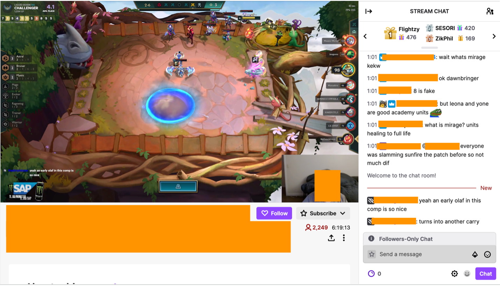

Welcome to the study information webpage for the Alternative Live Stream Interfaces research study.
We will give you a brief introduction about ourselves and the study. Next, you will be informed of the risks, confidentiality, and privacy of the study.
We are a group of Human-Computer Interaction researchers at the University of Manitoba interested in improving live stream interfaces. We developed a stream assistant prototype that the streamer would use for an hour during the stream. The streamer will share their prototype screen with us, and we will record their activity and take notes when they are streaming. This means that the stream chat, including viewers' usernames and messages, will be recorded too.
Upon signing on to Twitch, and according to the Twitch Privacy Policy, you agree to share your username and messages with other stream viewers: "You may share personal information when using the Twitch Services. One example is when you provide information about yourself as part of the Twitch account creation process. Another is when you take certain actions on the Twitch Services that are public or intended to be public in nature, such as when you broadcast content, participate in a chat room, post profile information, follow a channel, or subscribe to a broadcast channel. Given the social nature of some of the Twitch Services, that information may be collected, used, or disclosed by others who are part of that social interaction." We are only interested in the messages, and there will not be any use or mention of your username in any shape. It is recommended that you use aliases as your username. Your messages will be anonymized, and the recorded videos will be encrypted and kept private. The researchers observing the stream have completed the ethics training required of human-subjects researchers in Canada.
Your username will not be included in any publication. Our research study is focused on the streamer and their interaction and communication with the viewers. Any chat messages quoted in publications will be anonymized.
This is a screenshot of a Twitch stream that we will be recording. As you can see, on the right side, messages and usernames will be recorded as part of the live stream. The messages will be anonymized if used in research results.
The results of this study will be reported in a Master's thesis and will be available on HCI lab’s website by April 2023. If you feel uncomfortable with the stream being part of the study and that your usernames will be recorded, you are free not to watch the stream or participate in the chat conversation. By participating in the live stream and chat conversation, you agree to participate in the study, and we appreciate your contribution greatly.